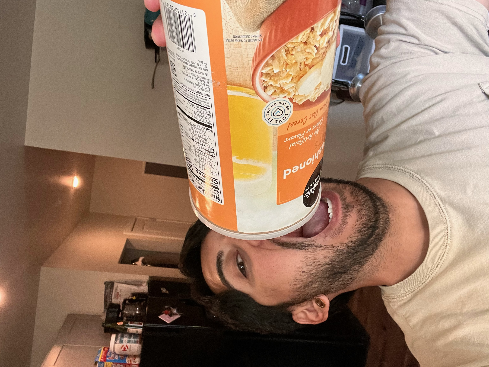

Overnight Oats

Description
This recipe does not have to be followed exactly. It's a perfect, quick breakfast and is calorically dense. Definitely make sure you let these actually sit overnight so the chia seeds soften. If you try eating this right after making it, you're going to have a bad time.
Ingredients
- 1 Scoop of Protein Powder. I like using Ghost Cinnabon flavor because it's fucking delicious
- 1 tbsp Peanut Butter
- 2 tbsp Chia Seeds
- 1/2 Cup of Oats
- Honey to taste (I'm not really sure how much I put in, I kind of just eyeball it)
- Frozen or Fresh Fruit
- Milk (soy, almond, oat, whichever you'd like)
Steps
- First, you want to put the oats, protein powder, and chia seeds into a mason jar. I personally like using the jars because it's convenient. I then shake up the jar to mix everything and I'm lazy
- Next, go ahead and add some milk, maybe about half a cup or so. We will add more later after adding the other ingredients.
- Go ahead and add the honey and peanut butter to the mix. Then, I HIGHLY recommend using a spoon to stir it around. Make sure you get all the protein powder mixed in, otherwise you'll get a big chunk of dry powder in your mouth.
- Now, grab some fresh or frozen fruit and add as much as you'd like. I prefer mixed berries. After adding the fruit, add milk to the remainder of the jar (not ALL the way to the top because the oats will expand).
- Congratulations, you've just made the easiest thing to meal prep. Let it sit overnight and it will be ready in the morning.
Return to Home